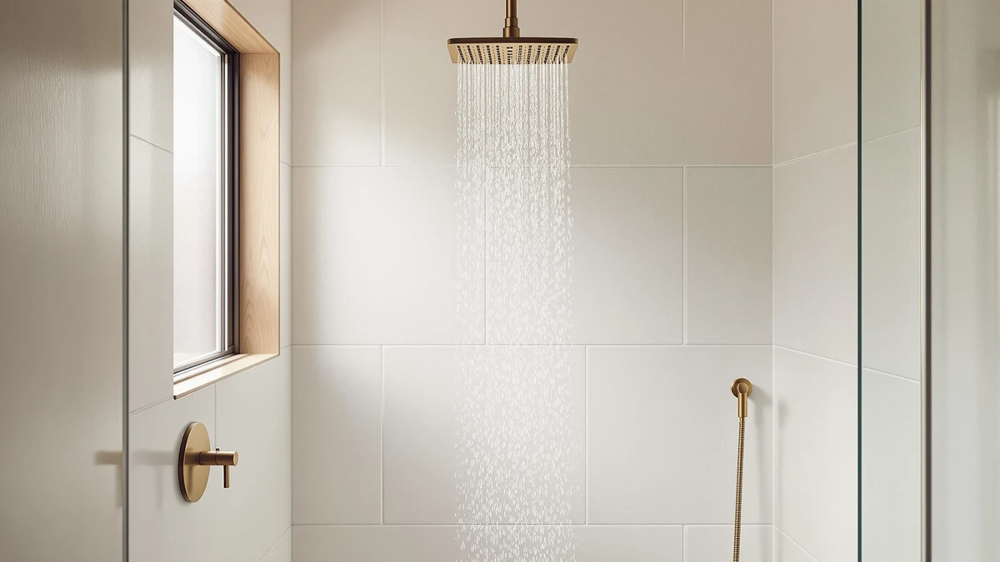

Best How to Install Shower Head (2026) | Best Shower Heads
Prices and picks verified as of September 2026. Independent, reader-supported reviews.


Things to Know Before You Buy
- Almost every shower head sold in the US uses a standard 1/2-inch NPT threaded connection, so most replacements fit without an adapter.
- You rarely need to shut off the main water. The shower valve stays closed during the swap, so the water left in the arm is minimal.
- Plumber's tape (PTFE or Teflon tape) is the single most important supply. Skipping it is the top cause of a leak at the joint.
- Hand-tight plus a quarter turn with a wrench is enough. Cranking harder cracks plastic fittings and strips threads.
- Budget shower heads start around $6, while premium rain and handheld models run $20 to $40.
If you have searched for how to install shower head instructions, you have probably noticed that most guides skip the small details that cause leaks. The job itself is quick. You unscrew the old head, prep the threads, and screw on the new one. The gap between a clean install and a dripping mess comes down to two things: sealing the threads correctly and not over-tightening the connection.
You do not need a plumber for this. A replacement shower head, a roll of plumber's tape, and about 15 minutes cover most swaps. This guide walks you through five steps, from shutting off the water to testing the new head, and it flags the mistakes that send people back to the hardware store.
What You'll Need
- Supplies: Plumber's tape (PTFE/Teflon tape), a replacement shower head, and a clean rag
- Tools: An adjustable wrench (or slip-joint pliers) and an old toothbrush for cleaning the threads
Step 1: Shut off the water and cover the drain
Start by making sure the shower valve is fully closed. To install a shower head you do not need to shut off the main water supply, because the shower arm holds only a small amount of water once the valve is off. If your valve is old or drips, close the bathroom supply line or the main to stay dry.
Lay a rag or small towel over the drain. The setscrews, washers, and other small parts around a shower head are easy to drop, and a covered drain saves you from fishing one out of the pipe later. It takes one minute and beats fishing a setscrew out of the drainpipe.
Step 2: Remove the old shower head
Grip the shower arm (the pipe coming out of the wall) with one hand to keep it from twisting inside the wall. With your other hand, turn the old shower head counterclockwise. Many come loose by hand. If yours is stuck from years of mineral buildup, wrap the connector nut in a cloth and use an adjustable wrench for leverage.
Protect the finish with that cloth so the wrench jaws do not scratch chrome or brushed nickel. Turn slowly and steadily. If the shower arm itself starts to rotate, stop and hold it firmer, because twisting the arm can crack the pipe joint inside the wall and turn a simple shower head installation into a real plumbing repair.
Once the old head is off, set it aside and take a close look at the threads on the shower arm.
Step 3: Clean the shower arm threads
The threads on the shower arm collect old plumber's tape, hard-water scale, and grit. Peel off any leftover tape with your fingers, then scrub the threads with an old toothbrush. A little white vinegar on the brush cuts through stubborn mineral deposits in a minute or two.
Wipe the threads dry with your rag. Clean, dry threads let the new tape grip and form a watertight seal. Skipping this step is a common reason a freshly installed shower head still drips, so take the extra minute before you install a shower head on top of grime.
Step 4: Wrap the threads with plumber's tape
Hold the end of the plumber's tape against the threads and wrap it clockwise, the same direction the shower head will screw on. Wrapping clockwise keeps the tape from unraveling as you thread the head. Go around two to three times, pulling the tape snug so it presses into the grooves instead of bunching up.
Two to three wraps is the sweet spot. Too little tape leaves gaps that leak, and too much keeps the head from seating fully. Press the tape into the threads with your fingertips so it lies flat. This tape layer is what actually seals the joint, so take your time with it.
Step 5: Attach the new shower head and test for leaks
Thread the new shower head onto the arm by hand, turning clockwise. It should spin on smoothly. If it binds or cross-threads, back it off and start again rather than forcing it. Tighten by hand until snug, then add no more than a quarter turn with a cloth-wrapped wrench if you still feel a small gap.
Turn the water back on and run the shower for a minute. Watch the connection where the head meets the arm. A few drips usually mean the tape needs another wrap, so shut off the water, back the head off, and add tape. Once the joint stays dry, the shower head is installed and you are done.
Common Mistakes to Avoid
The biggest mistake is over-tightening. Plastic connector nuts crack under wrench pressure, and metal threads strip when you crank past hand-tight. Snug plus a quarter turn is all you need to install a shower head. If it still leaks after that, the problem is the tape, not the tightness.
Forgetting the plumber's tape, or wrapping it the wrong way, is the second big mistake. Tape wound counterclockwise unravels the moment you thread on the head, so it does nothing. Always wrap in the same direction the head turns, and never reuse old, gummy tape, which almost guarantees a slow drip.
People also twist the shower arm instead of holding it steady, which loosens the fitting hidden inside the wall. That kind of leak can rot drywall for weeks before you notice it. Steady the arm with one hand every time you turn the head.
Finally, do not skip the leak test. It is tempting to walk away once the new head is on, but a joint that looks fine dry can weep under pressure. Run the water for a full minute before you call the job done. Skip that check and a small drip you missed becomes a weekend of redoing the work.
Our Top Picks
If your old head is worn out or you want stronger pressure, these three replacements install with the same five steps above. Each uses the standard 1/2-inch connection, so the process to install a shower head is identical no matter which one you pick.

Editor’s Pick
SparkPod Shower Head - High
A tool-free swap and strong, consistent pressure make the SparkPod the easiest upgrade for most bathrooms, and the chrome finish hides water spots well.
$39.99
Check Price on Amazon
Best Value
High Pressure Shower Head -
This high-pressure head boosts flow in homes with weak water pressure, and it threads on with the same steps. A solid choice if your current spray feels thin.
$35.99
Check Price on Amazon
Premium Choice
AquaBliss TurboSpa 3 Inch High
The compact 3-inch face delivers a surprisingly powerful spray, the price stays low, and it screws on in minutes like any standard head.
$18.99
Check Price on AmazonDo I need to turn off the main water to install a shower head?
Usually no.
How long does it take to install a shower head?
About 15 minutes for a standard swap.
Frequently Asked Questions
Do I need to turn off the main water to install a shower head?
Usually no. Closing the shower valve is enough, because the shower arm holds only a little water. Shut off the bathroom supply or the main only if your valve is old and drips.
How long does it take to install a shower head?
About 15 minutes for a standard swap. A stuck old head crusted with mineral scale can add 10 minutes if you need a wrench and some vinegar to break it loose.
Do I need plumber's tape to install a shower head?
Yes. Two to three clockwise wraps of PTFE tape around the shower arm threads seal the joint. Skipping the tape is the most common cause of leaks at the connection.
Why does my new shower head leak where it meets the pipe?
The tape is almost always the culprit. Shut off the water, unscrew the head, and rewrap the threads with two to three snug clockwise wraps. Avoid over-tightening, which cracks fittings and makes the leak worse.
Will any shower head fit my shower arm?
Almost certainly. Nearly all US shower heads and arms use a standard 1/2-inch NPT thread, so replacements fit without an adapter. Handheld kits come with their own mount.
Verdict
Knowing how to install a shower head saves you a service call and takes about 15 minutes with a roll of plumber's tape and an adjustable wrench. The five steps stay the same no matter which head you buy: shut off the water, remove the old head, clean the threads, wrap them clockwise with tape, and hand-tighten the new head before testing for leaks. The two details that matter most are sealing the threads properly and stopping at hand-tight plus a quarter turn, because over-tightening cracks fittings and under-taping causes drips. If you are replacing a tired head at the same time, the SparkPod High Pressure Shower Head is the easiest upgrade for most bathrooms, with a tool-free swap and steady pressure that hides hard-water spots. Whichever model you choose, run the shower for a full minute afterward and watch the joint. A dry connection means you nailed the shower head installation, and a stray drip means one more wrap of tape. Either way, you handled it yourself.